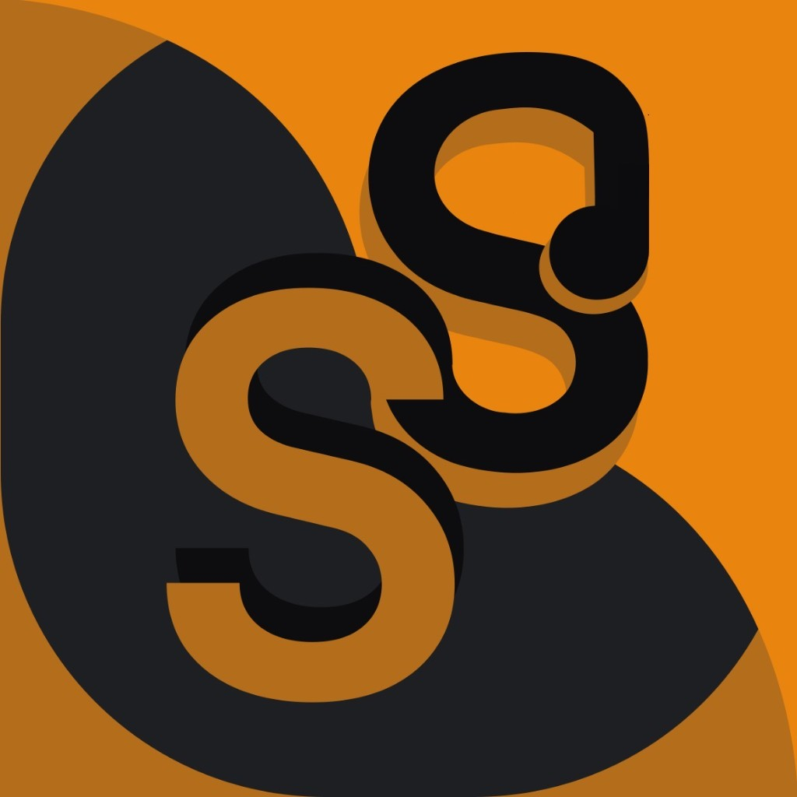
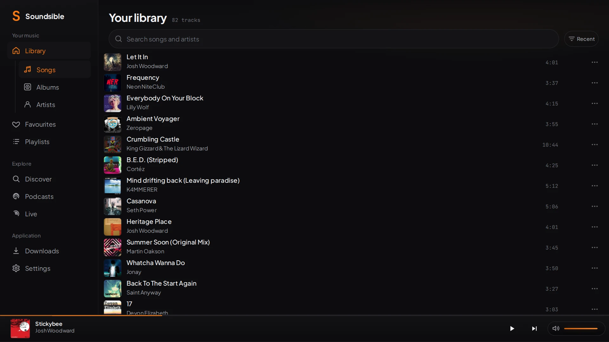
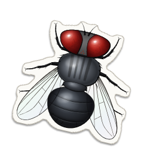
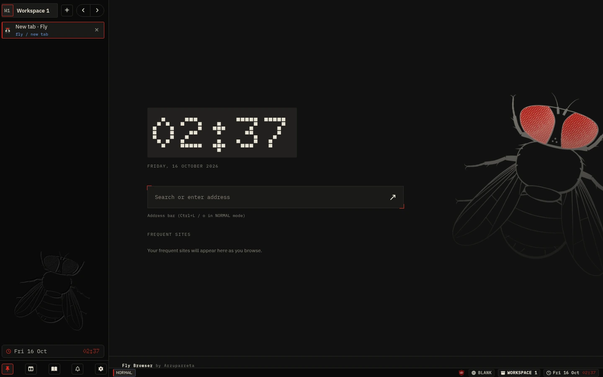

EN
Rubén Peña
ingeniero en coordinación de chatbots
GitHub

Soundsible
Servidor de música que alojas tú: busca en YouTube, descarga las canciones ya etiquetadas y las reproduce.
→

Ampliar ↗
Github

Fly Browser
Navegador minimalista para Linux con control completo por teclado, espacios de trabajo aislados y bloqueo de anuncios integrado.
→

Ampliar ↗
Github
Más proyectos
Ocultar proyectos
España Transparente
Diputados, votaciones, contratos y subvenciones en un mismo buscador, con la fuente oficial de cada dato.
→
Github
Remove Multi Titles YT
Extensión de navegador que mantiene el primer título y la miniatura que viste de cada vídeo de YouTube.
→
Github
×